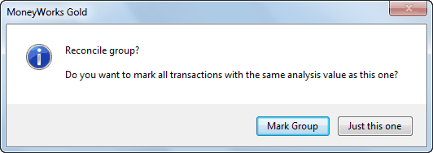

MoneyWorks Manual
Bank Reconciliation
Periodically you will receive a bank statement from your bank. You need to check that this agrees with the information that you have entered into MoneyWorks. This is called a Bank Reconciliation.
It is important that you do your bank reconciliations. If you don’t, your accountant will do them (and charge you accordingly).
Any MoneyWorks bank account can be reconciled, provided the Bank Account must be Reconciled option is set in the account record — see Bank Settings. Thus you can use this feature for your petty cash, credit cards etc.
- Choose Command>Bank Reconciliation
The Bank Reconciliation dialog box will be displayed.


- Choose the bank account to be reconciled from the Bank pop-up menu
All the reconcilable bank accounts1 in your system appear in the pop-up menu. If you choose Other, you will be able to select any account for reconciliation.
- Enter the statement date as it appears on the statement
Transactions dated after this will not show in the reconciliation.
- Enter the statement number from the bank statement
Each page of your bank statement should be reconciled separately.
- Enter the closing balance for this page of the bank statement
This will be found on the bank statement.
The Opening Balance is automatically maintained for you based on the previous reconciliations. You should never (and we mean never, never, never!) need to change it—if you do (and you can accomplish this by clicking the Change button), you have probably missed out a reconciliation or made some other error.
- If you have not yet posted some of the transactions that are to be reconciled, set the Include Unposted Transactions check box
If this is set, MoneyWorks will display unposted as well as posted transactions in the bank reconciliation list— see Reconciling Unposted Transactions.
- Click Reconcile to start the reconciliation
The Bank Reconciliation window is displayed. This is divided into two panes: reconciled transactions in the top pane, and all eligible transactions in the bottom. Eligible transactions are those (normally posted) payment, receipt and journal transactions against the nominated bank account which occurred on or before the statement date, and which have not previously been reconciled.

To mark a transaction as having been reconciled, locate it in the bottom pane and click on it—the transaction will be listed in the top pane (and greyed out in the bottom pane).
Note: If you have imported your statement with the Auto Reconcile option set, the imported transactions will already be in the top pane.
The bottom pane consists of a normal MoneyWorks list that you can sort and customise in the usual manner — see Sorting Records and Customising Your List. It will most accurately approximate2 the order on your bank statement if sorted by date.
The Bank reconciliation window has two “modes” of operation, Reconcile and Select. In the Reconcile mode, you can mark transactions as being reconciled (or not); in the Select mode you can open transactions for viewing or, if they are unposted, modification. You can also add transactions. When the Bank Reconciliation window first opens it will be in Reconcile mode.
- Click on each transaction (in the lower list) which appears in the statement
The transaction will be appended to the list in the top pane, and the one in the bottom will be greyed out, and a face icon placed in the OK column (it will be smiling if it was a receipt).

To unmark a transaction, click on it again (in the lower pane).
Tip: Although you can’t sort the top list, you can drag the transactions up and down. This means that you can (if you wish) get them into the same order as they appear on the bank statement.
Tip: You can use the up and down arrow keys and the space-bar to accomplish the reconciliation from your keyboard. The arrow keys move the current selection (identified by dotted lines) up or down; the space-bar marks the record as being reconciled (or unreconciled if it was already reconciled).
You should start at the top of the bank statement and work systematically down. Note that the top pane contains a running balance which you can compare with that on your bank statement.
Reconciled transactions are added to the Amount Processed which is shown in the summary area at the bottom of the top pane. This is the total of the marked movements in and out of the account.
This total is subtracted from the opening balance entered in the first stage of the reconciliation and checked against the closing balance for the current statement page. Any discrepancy appears as the Difference figure in the summary.
- When the reconciliation is complete (i.e. the Difference figure is zero), click the Print button to print the bank reconciliation summary report
This lists the opening and closing bank balances, the reconciled transactions and the unpresented cheques. It should be filed with your bank statement as proof that your accounts match the bank’s.
Pressing Ctrl-P/⌘-P will print all the transactions listed in the dialog box without any summary data.
- Click Finalise to complete the reconciliation
Any unposted transactions that you marked will be posted. The marked transactions will not appear in future reconciliations. Clicking Cancel discards the reconciliation—you can come back and do it later.
You will be prompted if you have not printed the summary report.
Reconciling a batch of transactions
Sometimes what is represented as one transaction on your bank statement is in fact made up of several individual transactions in MoneyWorks. For example, depending on your bank, a creditor payment schedule submitted electronically to the bank might appear on your bank statement as just one payment instead of one payment per creditor.
For bank reconciliation purposes, transactions with the same value in the Analysis field can be treated as a “group” or batch of transactions (which is why you can enter a batch number as the final step in an electronic payments run).
You can reconcile such a group of transactions with a single click by holding down the Option key (Mac) or the Ctrl and Alt keys (Windows) when you click on one of the transactions in the group. MoneyWorks will prompt you as to whether you want to reconcile just the transaction you clicked, or all the eligible unreconciled transactions with the same value in Analysis field:

Click Mark Group to reconcile all transactions with the same analysis code, or Just this one to just reconcile the clicked transaction.
If a transaction has been entered incorrectly

- Click on the Select icon to change the mode
You can add and modify (unposted) transactions in this mode. You can also cancel posted transactions and re-enter them.
- If the offending transaction is unposted, double click it, make any changes, and click OK
- If the offending transaction is posted, highlight it and click the Cancel toolbar icon
A reversing transaction will be created and posted for you — see Cancel Transaction. You will then need to re-enter the transaction with the appropriate changes (see below)
- Click the Reconcile button to return to reconciliation mode
If the transaction is missing
If you have not put the transaction in, you can do so at this point. However before you do this, you should check that the transaction has not really been entered already. Specifically, it might be entered against the wrong bank account, or with an incorrect date (both of these will prevent it showing in your reconciliation list). To check this, you may have to click the Finish Later button to leave the reconciliation and try to locate the transaction in the Transaction list.
To create a new transaction while doing a bank reconciliation:
- If you are not in the Select mode, click the Select button
- Click the New toolbar button
- Choose the appropriate transaction type from the Type menu
- Enter the transaction in the normal way
It is very important to ensure when you enter the transaction that it is made out against the bank account you are reconciling and that it is dated correctly (before the statement date), otherwise the new transaction will not appear in your reconciliation list.
1 A reconcilable bank account has the Bank Account must be Reconciled option set ↩
2 Is this an oxymoron? ↩